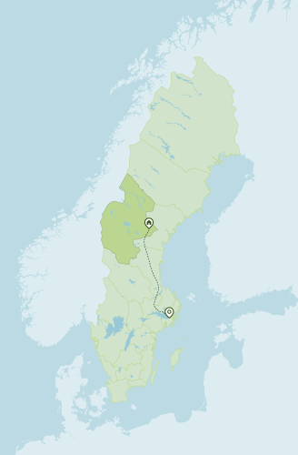
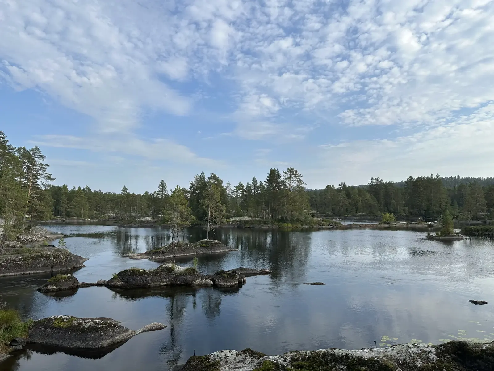
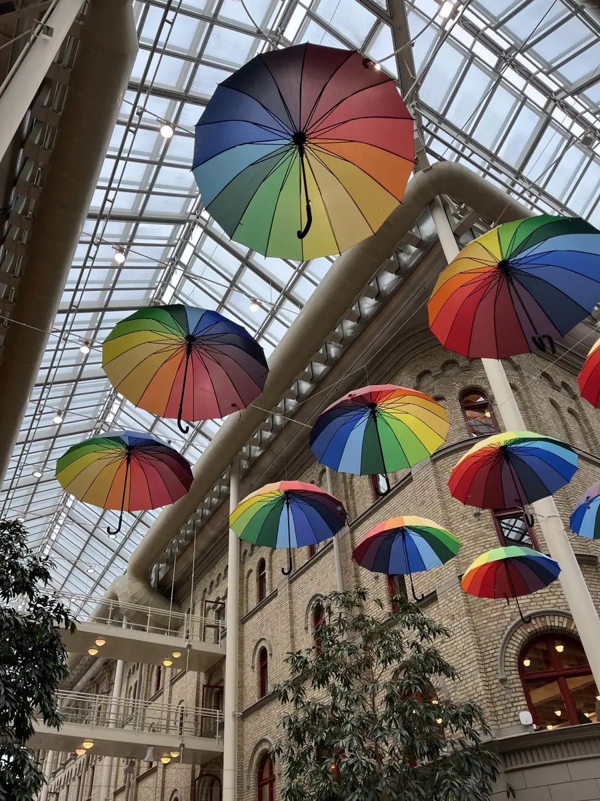

Valkallen (opent in nieuw venster)
Een klim van 240m met prachtige vergezichten.

of "Van harte welkom". De ideale gids voor wie Wim en Iris wil bezoeken in het prachtige hoge Noorden.

We kijken er enorm naar uit om je Zweden en onze prachtige plek in Hällesjö te tonen! We zijn zelf verliefd geworden op dit fantastische land en willen dat enthousiasme graag met je delen.
Zweden is een perfect roadtripland! Om de omgeving echt te ontdekken, is een auto of camper onmisbaar. Als je met het vliegtuig komt, raden we zeker aan in je eigen vervoer te voorzien. Uiteraard zijn er prachtige plekken om wat langer te verblijven maar zonder 'wielen' ben je hier niets.
Op dit moment hebben we zelf geen accommodatie om te verhuren. Een vakantiehuisje staat op onze wensenlijst maar voorlopig blijft dat nog even toekomstmuziek. We geven daarom verblijfplaatsen in de buurt mee aangezien ons eigen huis niet voorzien is op logement. Twee of drie overnachtingen kunnen we best organiseren in ons eigen huis maar voor een langer verblijf is het fijner als je een eigen plekje hebt. We vinden het alvast geweldig dat mensen de moeite doen om naar Zweden te reizen om ons te bezoeken!
Plan je reis vooral naar wat je zelf leuk vindt om te doen. Dat is voor iedereen anders… We hopen je met deze pagina alvast wat inspiratie te geven. Als het in onze agenda past om een activiteit of uitstap mee te doen, sluiten we graag aan! We hebben hier nu allebei ook een job dus het is jammer genoeg niet mogelijk om samen met jullie meerdere dagen op 'vakantie' te zijn.
We hopen dat deze pagina je helpt om je reis goed voor te bereiden en kijken ernaar uit om je hier te verwelkomen! 😊
Wil je Zweden echt ervaren heb je meer dan een paar dagen nodig. Zoals we al zeiden is Zweden een perfect land om te doorkruisen. Of het nu met de auto of met de camper is, via campings of Airbnb, neem je tijd!
Vanuit Antwerpen is het tot bij ons ongeveer 2.200km rijden. Doe je dus alles met de auto is dat best pittig. Wij deden het ooit op 2 dagen maar dat raden we af! 🤣
Uiteraard zijn er andere opties en kan je bijvoorbeeld de reis breken door een ferry te nemen of kan je perfect vanuit België naar Stockholm vliegen en daar een auto huren. Ook via de trein leg je in Zweden snel en betrouwbaar kilometers af maar toch raden we alsnog aan om iets van (gemotoriseerde) wielen te voorzien.
Plan je reis zoals je dat zelf het liefst hebt maar we delen alvast deze nuttige website die we zelf ook gebruikt hebben om onze roadtrips te plannen:
VISIT SWEDEN (opent in nieuw venster) - Een nederlandstalige website boordevol tips en duidelijke reisgidsen. Ze hebben zelfs een volledige pagina specifiek voor vervoer: VISIT SWEDEN - Reizen naar Zweden (opent in nieuw venster)

We bevinden ons tussen twee prachtige toeristische natuurregio’s op minder dan twee uur rijden:

Vlak bij de Noorse grens, nabij de stad Östersund
Aan de Botnische Golf (Vanaf Härnösand tot Örnsköldsvik)
Beide regio’s bieden spectaculaire landschappen met tal van gemarkeerde wandelroutes. In Åre vind je bovendien een uitgebreid netwerk van mountainbiketrails in de zomer en skipistes in de winter. Plan vooral je eigen routes en activiteiten - het internet staat boordevol inspiratie!
In de omgeving van Höga Kusten hebben we zelf al drie wandelingen gedaan die echt indruk op ons maakten, zowel door de adembenemende uitzichten als door de fysieke uitdaging die ze met zich meebrachten:
Een klim van 240m met prachtige vergezichten.

De hoogste berg in de regio. Je kunt helemaal naar de top wandelen of de skilift nemen. Eenmaal boven kan je in de zomer terecht in een gezellige fikabar.

Volg de rode route naar de canyon Skåttdalskrevan. Voor wie durft: neem de blauwe route terug. Die leidt je via een uitdagend pad langs de top.
Of je nu houdt van ontspannen wandelen of een stevige uitdaging, in deze regio's is er voor elk wat wils.
Blijf je liever in 'onze' regio, dan kies je voor meer rust en wordt vooral je innerlijke ontdekkingsreiziger aangesproken. Hier vind je nauwelijks gemarkeerde wandelpaden of verhuur van materiaal, maar wel ongerepte natuur en verborgen parels om zelf te ontdekken.
Door op verkenning te gaan in onze eigen regio, zijn we al heel wat bijzondere plekken tegengekomen. Die delen we graag met jou! Je kan ze wel niet altijd allemaal terugvinden op het internet.
We hebben ook een lijstje met 'secret spots' die we uiteraard niet op internet delen. Enkele prachtige plekjes die we zelf ook via locals ontdekt hebben maar die we met z'n allen willen beschermen tegen 'toerisme'. Deze plekjes bezoeken we heel graag samen met jullie!

Een wandeling in Döda Fallet (de "Dode Waterval") neemt je mee door een indrukwekkend drooggevallen rivierbedding, waar ooit de krachtigste waterval van Zweden stroomde. Dit natuurgebied ontstond nadat een mislukte wateromleiding in de 18e eeuw ervoor zorgde dat de rivier plotseling verdween. De wandeling voert je over houten loopbruggen, trappen en rotsachtige paden langs kloven en door bossen. Het is een toegankelijke, goed gemarkeerde route.
Bekijk op de kaart (opent in nieuw venster)Op 13km van hier ligt 200ha moerasgebied waar vele vogelsoorten te spotten zijn vanuit een recent gerenoveerde vogelhut. Volg de coördinaten hier: Google Maps (opent in nieuw venster)
Je komt eerst een bord tegen aan het meer Storflärken waar je ook gezellig kan zitten in een hut aan het water. Daar staat ook de pijl richting de uitkijktoren. Je wandelt (of rijdt) dus nog verder de weg op tot je op je rechterkant een houtje paaltje met geel rechthoekje tegenkomt (in de bocht). Daar wandel je in en volg je dezelfde paaltjes. Op een bepaald moment steek je een riviertje over en iets verder draai je rechts het bos in. Neem zeker een verrekijker mee!
Op 800m is er de publieke badplaats. Een plek met omkleedruimtes, droogtoilet, grillplaats, picknickbankjes, zandbak en strandtoegang tot het meer.
Hieronder lijsten we enkele mooie plekjes op, met of zonder korte wandeling beschikbaar. Zeker een aanrader om hier een daguitstap van te maken en met de auto van plekje naar plekje te rijden (rijtijd ongeveer 1,5u). Perfect te doen in 1 dag! Deze zijn vaak gewoon in te geven in Waze, Apple maps of Google maps.
Bekend voor zijn waterversnellingen, de liefhebbers kunnen er ook een dagje vissen.
Je kan kiezen om de gele ruitjes te volgen (2,8km) of de witte ruitjes (5km). Wil je nadien wat afkoelen dan kan je naast de camping van een hangbrug in de rivier springen.
Kleine watervalletjes. Je rijdt de camping af en draait links de weg op, 500m verderop parkeren aan rechterkant bij de P net na het bruggetje.
Een prachtige waterloop met versnellingen zoals Båthallan. Parkeer je auto en dan is er nog een makkelijk toegankelijke wandeling van ongeveer 300m tot aan de waterloop.
In de winter kan je hier in de omgeving perfect langlaufen op het meer en in de bossen.
Daarnaast hebben we ook een 'kleinschalige' organisator van hondensleetochten. We bevelen hen warm aan vanwege hun liefde en respect voor de honden. Ze doen dit eerder als training en niet als toeristische attractie. Majik Mushing (opent in nieuw venster)
Met een beetje geluk kan je hier ook het Noorderlicht en/of wilde dieren spotten, maar dat kunnen we uiteraard niet beloven! 😉


Hier kan je een slaapplek vinden.
Opgelet! Deze accomodaties zijn niet door ons uitgetest, doe dus zeker voldoende research alvorens je iets boekt.
Verschillende van onze buren verhuren hun eigen (vakantie)huisje of een apart huisje. Op de pagina van ons dorp staan een aantal verhuuropties maar wel enkel in het Zweeds. Naar ons gevoel zijn de huisjes vaak betaalbaar maar verwacht niet de grootste luxe.
Grote en kleine huisjes alsook kampplaatsen. Ze organiseren ook verschillende zomer- en winteractiviteiten.
Grote en kleine huisjes alsook kampplaatsen. Ook hier organiseren ze verschillende zomer- en winteractiviteiten.
Grote vakantiewoning nabij een prachtig meer. Ideaal voor grote(re) groepen.
Camping die iets verder weg ligt (40min) maar wel een groot aanbod heeft.
Een typisch Zweeds 'shoppingcenter'. Het is even rijden, maar je kan hier wel echt alles vinden. IKEA, kledingwinkels, sportwinkels, restaurants, bouwmarkten, enz...
De Zweden in het Noorden hebben geen echte shopcultuur zoals wij die kennen. De winkelstraten zijn hier de helft van het jaar ondergesneeuwd dus vaak zien winkelstraten er heel erg verlaten uit maar vergis je niet. Achter grijze gevels zitten vaak de leukste en gezelligste winkels, restaurantjes. Verwacht niet het aanbod van de Meir of andere grote winkelstraten maar eerlijk: kom je daarvoor naar Zweden? 😉
Deze regio staat niet meteen bekend voor zijn culturele en gastronomische hoogtepunten. 🙂 Hier is er niets zo leuk dan zelf iets klaarmaken op het open vuur, een barbecue of zelfs de houtoven.
ICA is te vergelijken met winkels zoals Carrefour of Delhaize. Deze kleine lokale supermarkt heeft alle basisproducten. Je kan hier alles vinden maar verwacht geen 'keuze'. Zweden heeft een cultuur van: je koopt een Zweedse komkommer, je hebt hier geen keuze tussen 5 soorten komkommers.
Dezelfde eigenaar als ICA Kälarne en dus ook 'lokaal'. Deze winkel is echter een stuk groter en je vindt er een ruimer aanbod. Het is vanuit Hällesjö wel 40 minuutjes rijden. Maak dus een winkellijstje! 😊
Grote winkel met een enorm aanbod. Ideaal voor de grote 'wekelijkse inkopen'. Het is vanuit Hällesjö wel 1,5 uur rijden. Ga er dus niet van uit dat je hier even snel een bus melk kan gaan halen. In Sundsvall vind je wel ook andere 'goedkopere' winkels zoals COOP, Lidl of Willy's (soort Aldi).
Wil je niet zelf koken? Geen probleem maar dan moet je er wel even voor rijden…



Zo, dat was een hele boterham of zoals ze hier zeggen ‘en smörgås’.
We hopen dat je hiermee al een eind op weg bent. En is er iets nog niet geheel duidelijk, dan weet je ons wel te vinden.
Veel liefs
Wim, Iris en Nala